来源：https://udxxg5rx5m.feishu.cn/docx/AVVcdR9dPowYkaxvSL3cQ8Pgnmg
我是施仁，专注小众赛道项目。
之前分享过的得物被加了精华后，
在一些地方看到被转载了文章，
这里说一下，
文章我只发布在生财，允许转载，但请注明出自生财，
本人不会在其他平台发布文章，联系到作者皆不是本人。
可以先看下收益，
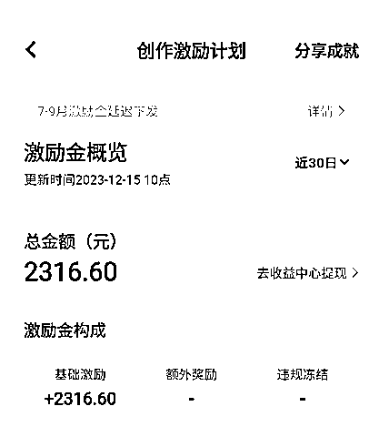
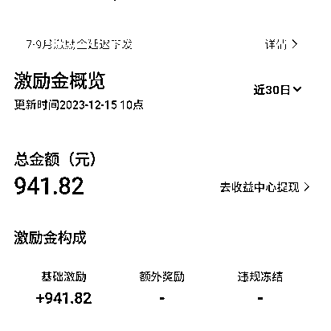
vivo短视频优势：
1.小众，几乎没人注意到，
2.平台处于发展期不完善，批量做号几乎没有什么限制，手机号接码即可，直接通过网页登录发布作品，
3.注册简单，注册20个只有一个号被冻结了，那个号还是才开始考虑互关粉丝专门用接码平台接得号，
4.门槛低，只要有手机号就可以做。
vivo短视频这个估计很少有人听过吧？生财搜了一下一条文章都没有。
知道这个项目也纯属巧合，
前一阵在跟几个小伙伴合作快手的项目，搞了一大批vivo当工作机，
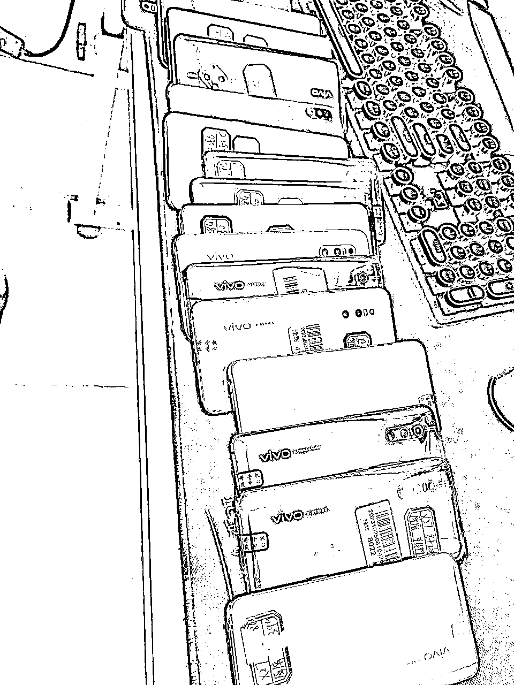
工作室的小伙伴跟我说发现个vivo短视频app，里面有个激励计划，
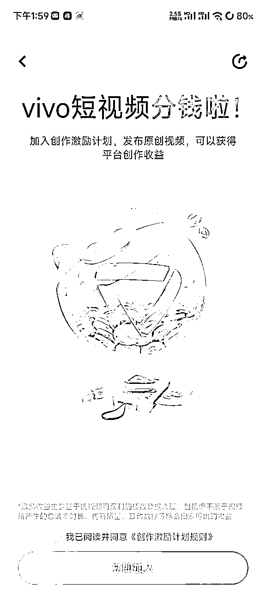
我看下加入计划的条件：
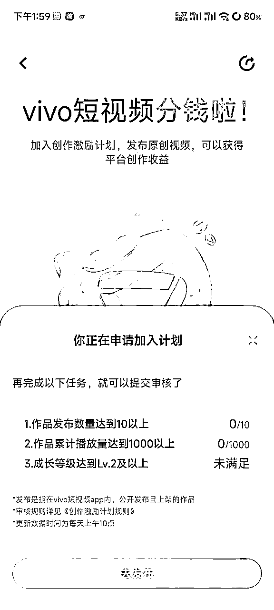
1.作品发布数量达到10以上
2.作品累计播放量达到1000以上
3.成长等级达到Lv.2及以上
前两条很好理解，第三条说等级要达标，我深入了解了一下，也很简单，满10个粉丝即可。
然后开始搜集vivo短视频的一些相关信息，发现少之又少。
只好自己摸着石头过河。
安排了一个小伙伴注册了20个短视频号。
先DY找对标作者，
名字头像签名，资料包装好，
每个号开始发5-7个视频，
每天跟踪账号播放量，
第三天开始把总播放量破千的账号进行补漏，
粉丝不够十个的随便那其他的号关注一下即可。
这里注意一下，激励计划的达标是第二天显示前一天的数据，
也就是说你当天播放到了一千，可以在凌晨12点前看下粉丝量够不够，
不够就直接补够10个，
这样到第二天所有数据都更新后就全都达标了，可以提交申请。
提交后审核时间不一定，2-7天会出结果，这个时间作品可以继续保持更新，每天1-2条即可。
开通激励后，就可以直接起量了，
敲黑板，（搞笑，影视，生活）这几个领域都可以重点关注下。
之前提交审核不是提交的对标作者吗，你可以继续搬运这个作者的作品，
如果作品不多的话，建议直接名字头像全部改掉，换号另起炉灶，
之前的操作主要是为了通过激励计划的审核，
因为个人特色比较鲜明的账号相对来说更容易通过审核，
另起炉灶的话，我强烈建议找二剪搞笑视频合集，或者生活类新闻，热门新闻的账号，
这类账号的优点是素材多切混着发都不会被察觉不是同一个作者的作品，
每天每个账号20个作品+，
作品抽帧+片头，去原创的操作生财很多讲的我就不说了。
每天就堆量，
目前测试下来，热门新闻的账号播放很容易起来，
不过这个就需要更花时间和精力的找素材了，
20个账号算下来，有一个异常被冻结了，4个审核没通过，还有2个播放不行收益几分钱，换素材也涨不上去。
有13个号起来了。
不定时会在创作者中心发布一线创作者相关活动，可以多关注一下，
最近的话有个招募活动不过参加需要实名，
我就没有做，感兴趣的朋友可以去尝试下，
目前vivo短视频正式出激励政策没几个月，还处于发展期，
上限有限，所以最好多账号批量做。
vivo的创作者网页版入口：https://kaixinkan.vivo.com.cn/#/
注意注册的时候，
最好的方式是一机一号一IP注册，这样最安全，
条件不够的，可以电脑浏览器无痕模式，
用网页https://kaixinkan.vivo.com.cn/#/注册登录，
千万不要一个手机一直去注册，
我注册的时候，遇到提示手机号风险不让注册的，
都通过网页方式注册成功了。
网页注册的号，其实都可以不考虑登录手机，
从账号注册、修改资料、发作品、提现全程都可以网页操作。
开通收益的入口网页也有，就在首页广告位，
网页实名提现我后面会讲。
目前对于网页，多个vivo账号同一地点登录，检测并不严，
大致看了下甚至还有些漏洞，这个就不多说了，
这个东西上限不高，所以分享出来给生财的朋友可以小搞一下。
最近逛生财看到不少项目，
不少要求有资源有渠道等等，入门的门槛有点高，
这个项目只要能弄来几个手机号就可以上手，花点时间的问题。
作品最好是竖屏作品，
目前我测试下来，
横屏作品相对还是比竖屏作品播放低不少。
作品里一定多加一些相关标题，
作品还会会不定期被官方助推，
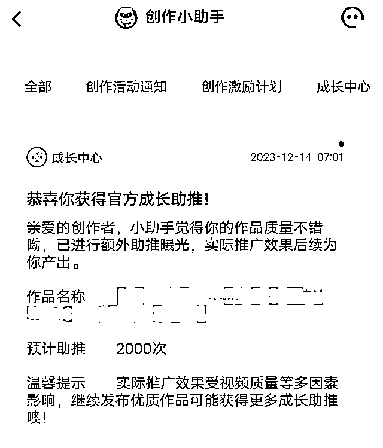
还有一点要注意，就是虽然平台没有像抖音那样大体量，
但是审核机审也是比较严的，
一些敏感词该规避还是要规避，
虽然可以申诉但是等待时间比较久，
尽量不要触发去违规，
例如：地球，侵入这类标题，
就导致我一个播放很不错的账号第二天明显流量下滑。
我目前只遇到过这一次。
PC创作者中心，
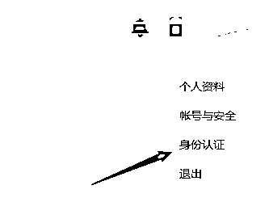
右上角先身份认证，
认证完成，即可在左边导航栏收益中心提现。
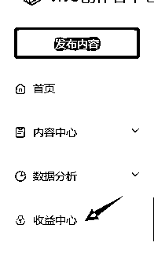
但是要记住，账号注册号不要急着提现，会占用实名。
我这边目前还在运营的账号都没有进行实名提现。
激励金第一个月的钱会在下个月15日左右发到钱包进行提现。
注册卡也可以注册vivo号，出现风控，
就用我上面提供的注册方法去注册，百分百能注册下来。
至于注册卡怎么买也不用我说吧，生财里也有很多人卖，
网页登录也不用来回切换账号，谷歌浏览器可以分身的，
打开谷歌浏览器，
右上角这个位置，
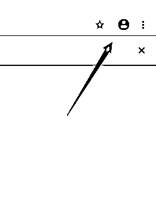
然后点添加
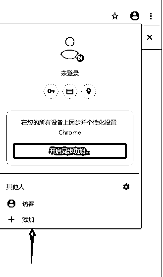
起名字点击添加就好了，
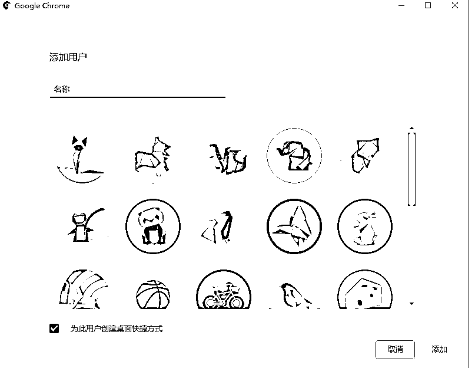
你就会在桌面看到一个谷歌快捷方式，
登陆这个账号用快捷方式双击打开即可、
我这边多账号操作，是用软件全自动去登录发布，
本来是想免费分享出来，
但是因为之前有很多例子，
分享出来一个软件，
辛苦录个教程很多人不看，
加上微信张嘴就问，所以就不太想分享了，
各位见谅，软件不卖，更不需要联系我，
十来个账号自己手动发其实也花不了太多时间。
vivo短视频app下载链接：
链接：https://pan.baidu.com/s/1vBZtlf0mGIOzAhA5Fn4dGw?pwd=1hrs
提取码：1hrs
PS：根据自己平时使用需求，今年开发了一款综合性软件，欢迎使用
本软甲可以登陆各种平台：抖音、快手、小红书、知乎、得物等等。进行矩阵管理，
软件控制谷歌浏览器进行使用，可以自由切换各种平台账号，
对账号进行各种备注、标记，自由导出程本地表格。
可以批量对指定账号的指定数据进行获取。
比如可以批量获取自己某些账号的粉丝，账号余额等（需要对F12元素有一定基础）